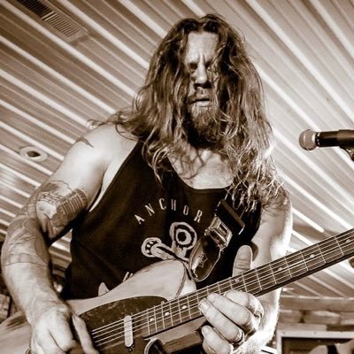
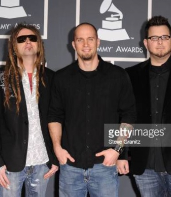
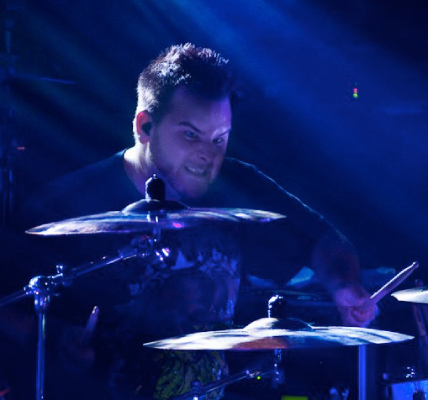

INTEGRANTES
Prepárate para conocer a los integrantes de Decyfer Down, una banda de rock originaria de Carolina del Norte, Estados Unidos. TJ Harris en la voz, Chris Clonts en la guitarra, Benjamin Millhouse en el bajo y Josh Oliver en la batería son los talentosos músicos que conforman la banda. Juntos han creado música enérgica y poderosa con letras significativas.

TJ Harris - voz principal, guitarra rítmica, guitarras acústicas, piano (2008-presente) ; bajo (2008-2009) ; coros ( solo en estudio )

Christopher Clonts - guitarra principal, guitarra rítmica, coros (2002-presente; solo estudio desde 2015)
Brandon Mills - Guitarra, coros (1999-Presente).

Josh Oliver - Batería, percusión (1999-Presente).